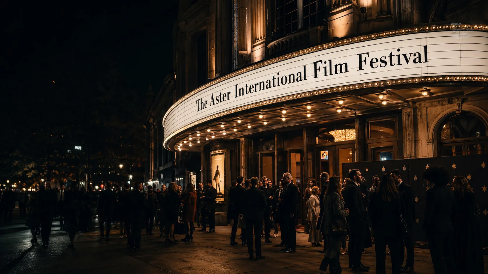
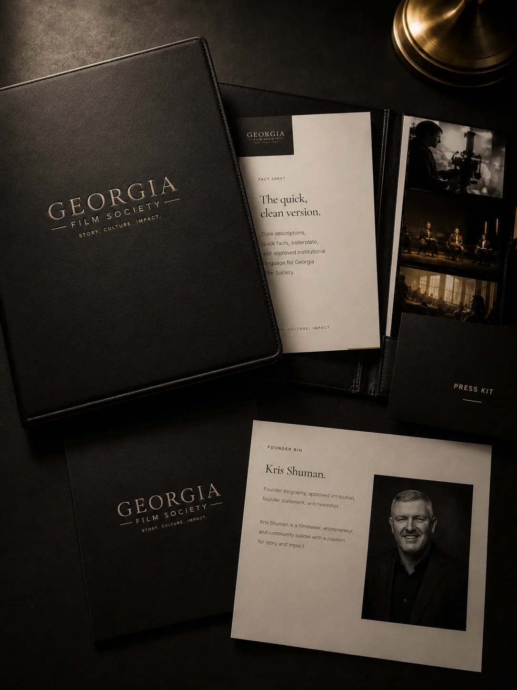
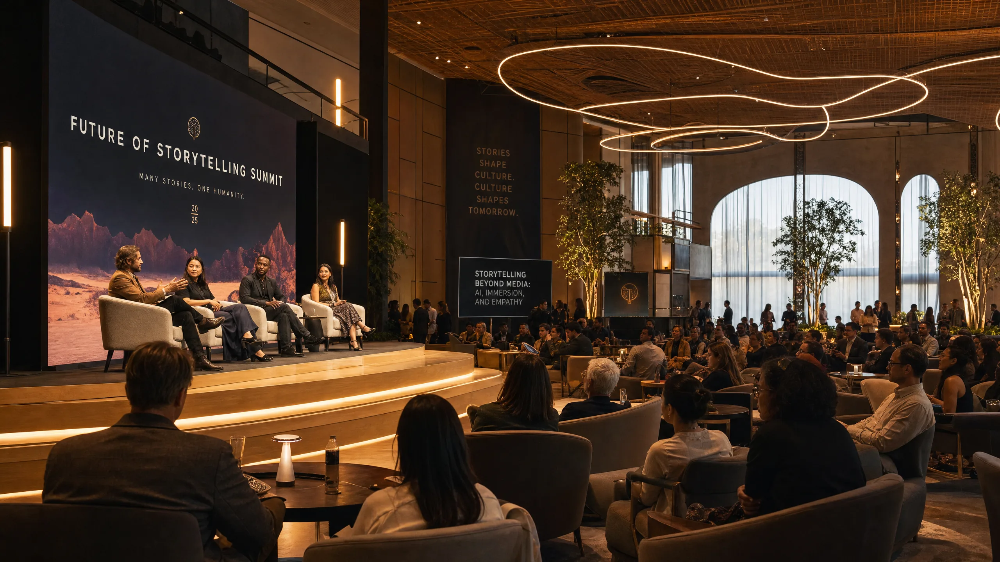

Short description
Georgia Film Society is a nonprofit cinematic cultural institution for Georgia and the Southeast.
Press
Media contacts, institutional descriptions, The Aster language, logos, imagery, fact sheets, and public reference materials for Georgia Film Society.
Approved language
Georgia Film Society is best described as a nonprofit cinematic cultural institution for Georgia and the Southeast, with The Aster Film Festival as its flagship festival.
Short description
Georgia Film Society is a nonprofit cinematic cultural institution for Georgia and the Southeast.
Standard description
Georgia Film Society is a nonprofit cinematic cultural institution dedicated to artistic excellence, filmmaker support, cultural conversation, education, membership, patronage, and the enduring role of film in Georgia and the Southeast.
Extended description
Georgia Film Society supports a year-round ecosystem for cinema, filmmakers, patrons, students, partners, and audiences across Georgia and the Southeast. Its work includes curated screenings, salons, education initiatives, filmmaker-centered programming, membership, patronage, partnerships, story and technology conversations, and The Aster Film Festival as its flagship festival.
Usage note
Use institution-first language. Avoid describing Georgia Film Society as a film club, casual meetup, festival-only organization, or generic arts group.
Media assets
Start with the fact sheet, then use the approved logo, photo, founder, leadership, and festival materials as needed.

Flagship Festival
The Aster
A selective festival shaped by curation, hospitality, discovery, and cinematic distinction. The Aster belongs inside the larger Georgia Film Society institution.

Start Here
Fact Sheet
Core descriptions, quick facts, boilerplate, and approved institutional language for Georgia Film Society.
View Fact SheetLogos
Download the approved Georgia Film Society logo package and usage notes.
View LogosImages
Browse selected images for coverage, announcements, partner materials, and public references.
View ImagesFounder
Founder Bio
Founder biography, approved attribution, founder statement, and headshot.
View Founder Bio
Leadership
Board & Officers
Public-facing board, officer, and leadership information for press and partner use.
View LeadershipPress contact
For interviews, media kit requests, approved descriptions, logos, imagery, fact sheets, or The Aster-related questions, send a press inquiry.
Georgia Film Society is a nonprofit cinematic cultural institution for Georgia and the Southeast.
The Aster Film Festival is part of the larger Georgia Film Society institution, not a separate replacement for it.
Please avoid describing GFS as a film club, hobby group, meetup, startup, or festival-only organization.
Please include your outlet, deadline, request type, and any relevant context when reaching out.
Media inquiries
Georgia Film Society is a nonprofit cinematic cultural institution for Georgia and the Southeast, with The Aster Film Festival as its flagship festival.